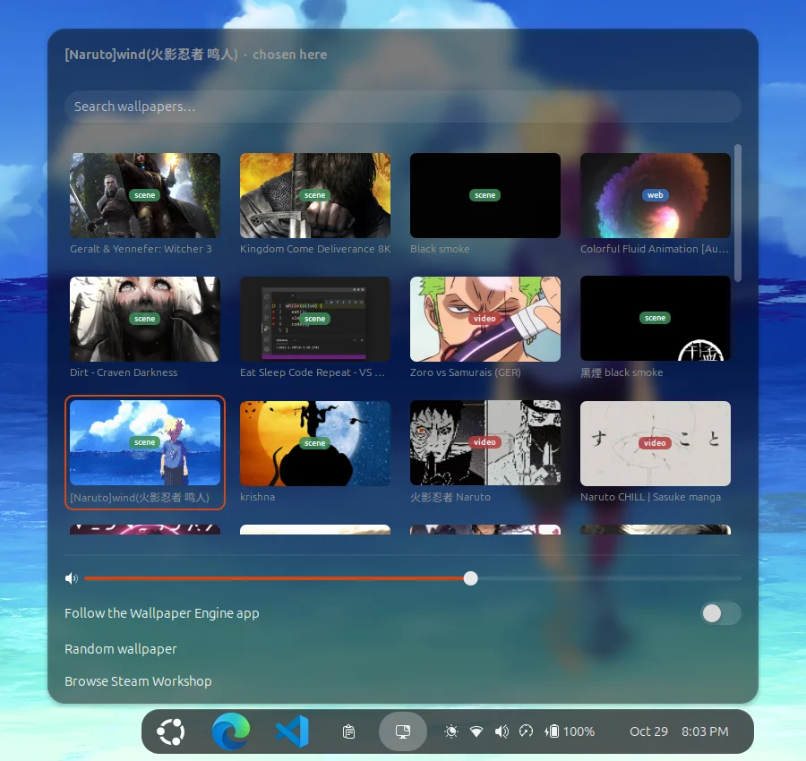

What it does
- Scene, web and video
- Plays the wallpapers you subscribed to in the Steam Workshop. Scene and web wallpapers run in linux-wallpaperengine, videos in mpv.
- Follows your mouse
- Parallax, cursor effects and clicks on the desktop reach the wallpaper. Clicks on your windows always go to the windows.
- Sound only on the desktop
- The wallpaper’s audio plays while the desktop has focus and goes quiet when you switch to an app.
- Everywhere GNOME shows a background
- The desktop, the overview, the workspace previews and the lock screen.
- A picker in the top bar
- Thumbnails of everything you subscribed to, search, volume, a random wallpaper, and a link to the Workshop.
- Easy on your laptop
- Renders on the integrated GPU and freezes completely while you work or play a game.
It stops when you start working
As soon as a window has focus, the wallpaper is frozen in place. It uses no CPU and no GPU until you come back to the desktop, where it carries on from the same frame.
Try it here: click the window, then click the wallpaper around it.
Prefer it to pause only for fullscreen apps and games? Run wwe config pause=fullscreen.
Playing. The desktop has focus.
0 frames drawn

Choose a wallpaper from the top bar
The picker lists every wallpaper you subscribed to, with its type. Click one and it’s on your desktop a moment later. Volume and pausing are set in the same menu.
Everything is also in the wwe command:
wwe list # your wallpapers
wwe set 3652531378 # by Workshop id
wwe set ~/Videos/rain.mp4 # or any video
wwe random --type scene
wwe config volume=70 fps=24How it works on GNOME
Other Wayland desktops let a program draw on the background layer. GNOME doesn’t, so this project hands the job to a small GNOME Shell extension.
- The renderer runs as a hidden window. linux-wallpaperengine draws scene and web wallpapers, mpv plays videos.
- The extension copies it into GNOME’s background. A live copy of that window sits inside the desktop, overview and lock screen backgrounds.
- The extension passes the mouse on and decides when to play. It sends pointer movement and clicks to the renderer, mutes it away from the desktop, and freezes it while you work.
On KDE Plasma, Hyprland, Sway and niri, linux-wallpaperengine draws on the background layer directly; wwe picks the right way for your desktop.
Install
-
Run the installer in a terminal. It asks before installing any packages, then builds the renderer once (10 to 20 minutes).
curl -fsSL https://raw.githubusercontent.com/BhuwanJoshi-01/wayland-wallpaperengine/main/install.sh | bash Log out and back in once, so GNOME loads the extension.
Pick a wallpaper from the new icon in the top bar, or run
wwe random.
Something not working? Run wwe doctor and see the troubleshooting guide.
You need
- Wallpaper Engine on Steam, with some wallpapers subscribed in the Workshop. The app itself doesn’t need to run.
- GNOME 46 to 50 on Wayland (tested on GNOME 50), or KDE Plasma 6, Hyprland, Sway or niri.
- Ubuntu, Debian, Fedora, Arch, openSUSE or a relative of them, with systemd.
- A GPU with OpenGL 3.3.
Remove it
~/.local/share/wayland-wallpaperengine/src/uninstall.sh removes the extension, the wwe command and the service. Add --purge to delete your settings and the renderer build too.